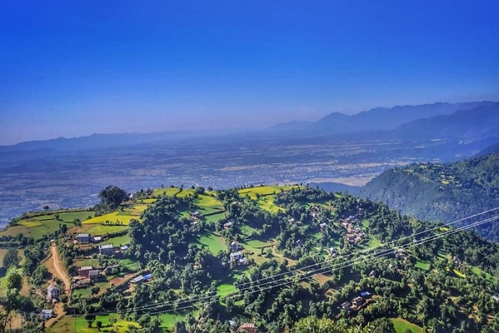
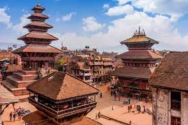

Internal and external linking
About Nepal
Nepal, country of Asia, lying along the southern slopes of the Himalayan mountain ranges. It is a landlocked
country located between India to the east, south, and west and the Tibet Autonomous Region of China to the
north. Its territory extends roughly 500 miles (800 kilometres) from east to west and 90 to 150 miles from north
to south. The capital is Kathmandu.
Some major cities :
- Kathmandu
- Pokhara
- Dang
Dang

Dang District (Nepali: दाङ जिल्ला, [daŋ]) is the district of Lumbini Province located in the Inner Terai of
midwestern Nepal. Deukhuri valley of the district is the capital of the province and is the second largest
valley of Asia surrounded by Sivalik Hills and Mahabharata Range.[2] The district headquarter Ghorahi is the
seventh largest city and the largest sub-metropolitan city of Nepal. Tulsipur sub-metropolitan city, the second
largest city of Dang, is a major transportation hub with an extensive road and air networks. The district covers
an area of 2,955 km2 and has a population of 548,141 (2011 census).[1]
Dang district has been archeologically studied extensively since the 20th century due to the discoveries of
ancient fossils of apes and early humans.[3][4] The district is considered the center of Sanskrit language in
Nepal and is home to Nepal's second oldest university, Nepal Sanskrit University which is the only Sanskrit
university of the country as well as Rapti Academy of Health Sciences (RAHS),[5] the state-owned medical college
of Lumbini Province with the Prime Minister of Nepal as the Chancellor.[6] There are numerous temples and gumbas
in Dang Deukhuri district with puranic legendary connections to Mahābhārata, Shaivism, Shaktism & Gorakhnath
making it one of the richest cultural sites of the country.[7]
Pokhara

Pokhara’s tranquil beauty has been the subject of inspiration for many travel writers. Its pristine air,
spectacular backdrop of snowy peaks, blue lakes and surrounding greenery make it ‘the jewel in the Himalaya’, a
place of remarkable natural disposition. With the magnificent Annapurna range forming the backdrop and the
serenity of the Cluster of 9 Lakes with three major ones - Phewa, Rupa and Begnas – Pokhara is a great
destination for a weekend getaway as well as a long relaxing holiday. Pokhara Valley, gateway to the Annapurna
region where many a trekker finds his Shangri-la, sits high on the list of ‘must visit’ places in Nepal.
Pokhara once lay on the important trade route between India and Tibet. To this day, mule trains set up camps on
the city outskirts, bringing goods from remote Himalayan regions including Mustang. Gurungs and Magars, who have
earned world-wide fame as fierce Gurkha warriors, are predominant here. Thakalis, indigenous of the Thak Khola
region of Mustang, are known for their entrepreneurship and run tea houses along the trek routes in the
Annapurna region. The Pokhara is best known for the stunning view of the Annapurna range. It is perhaps one of
the few places on earth from where mountains above 6,000 m can be seen unobstructed from an altitude of 800 m
within the distance of 28 km.
Kathmandu

Kathmandu,[a] officially Kathmandu Metropolitan City,[b] is the capital and most populous city of Nepal with
845,767 inhabitants living in 105,649 households in 2021 AD[2] and 2.9 million people in its urban
agglomeration. It is located in the Kathmandu Valley, a large valley in the high plateaus in central Nepal, at
an altitude of 1,400 metres (4,600 feet).
The city is one of the oldest continuously inhabited places in the world, founded in the 2nd century AD. The
valley was historically called the "Nepal Mandala" and has been the home of the Newar people, a cosmopolitan
urban civilization in the Himalayan foothills. The city was the royal capital of the Kingdom of Nepal and hosts
palaces, mansions and gardens built by the Nepali aristocracy. It has been home to the headquarters of the South
Asian Association for Regional Cooperation (SAARC) since 1985 AD. Today, it is the seat of government of the
Federal Democratic Republic of Nepal, established in 2008 AD, and is part of Bagmati Province.
Kathmandu is and has been for many years the centre of Nepal's history, art, culture, and economy. It has a
multi-ethnic population within a Hindu and Buddhist majority. Religious and cultural festivities form a major
part of the lives of people residing in Kathmandu. Tourism is an important part of the economy in the city. In
2013, Kathmandu was ranked third among the top ten upcoming travel destinations in the world by TripAdvisor, and
ranked first in Asia. The city is considered the gateway to the Nepal Himalayas and is home to several World
Heritage Sites: the Durbar Square, Swayambhu Mahachaitya, Bouddha and Pashupatinath. Kathmandu valley is growing
at 4 percent per year according to the World Bank in 2010 AD, making it one of the fastest-growing metropolitan
areas in South Asia, and the first region in Nepal to face the unprecedented challenges of rapid urbanization
and modernization at a metropolitan scale.[4] It is the largest metropolitan area located in the Himalayas.
Etymology
The indigenous Nepal Bhasa term for Kathmandu is Yen. The Nepali name Kathmandu comes from Kasthamandap, which
stood in Kathmandu Durbar Square, was completely destroyed by the earthquake of April 2015, but has since been
reconstructed. In Sanskrit, Kāṣṭha (Sanskrit: काष्ठ) means "wood" and Maṇḍapa (Sanskrit: मण्डप) means
"pavilion". This public pavilion, also known as Maru Satta in Newari, was rebuilt in 1596 by Biseth in the
period of King Laxmi Narsingh Malla. The three-storey structure was made entirely of wood and used no iron nails
nor supports. According to legends, all the timber used to build the pagoda was obtained from a single tree.[5]
The colophons of ancient manuscripts, dated as late as the 20th century, refer to Kathmandu as Kāṣṭhamaṇḍap
Mahānagar in Nepal Mandala. Mahānagar means "great city". The city is called Kāṣṭhamaṇḍap in a vow that Buddhist
priests still recite to this day. Thus, Kathmandu is also known as Kāṣṭhamaṇḍap. During medieval times, the city
was sometimes called Kāntipur (Sanskrit: कान्तिपुर). This name is derived from two Sanskrit words – Kānti and
Pur. Kānti is a word that stands for "beauty" and is mostly associated with light and Pur means place, thus
giving it the meaning, "City of light".
Among the indigenous Newar people, Kathmandu is known as Yeṃ Dey (Newar: येँ देय्), and Patan and Bhaktapur are
known as Yala Dey (Newar: यल देय्) and Khwopa Dey (Newar: ख्वप देय्) respectively.[6] "Yen" is the shorter form
of Yambu (Newar: यम्बु), which originally referred to the northern half of Kathmandu. The older northern
settlements were referred to as Yambi while the southern settlement was known as Yangala.[7][8]